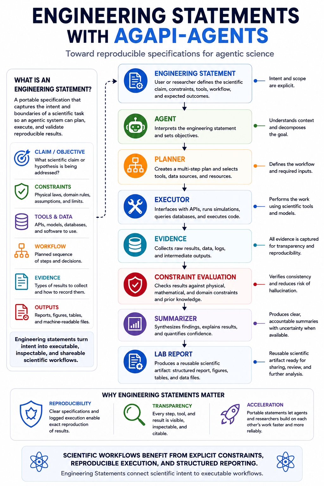
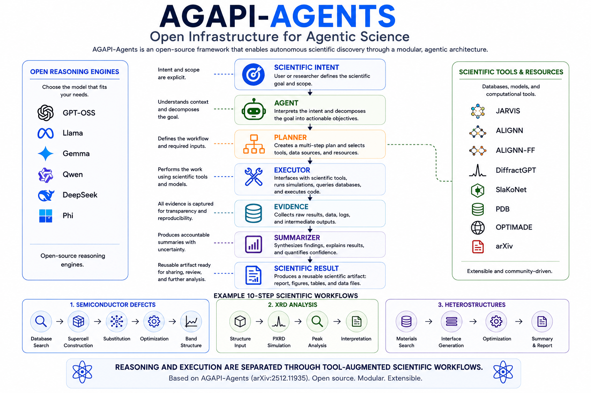

Climate Reality describes.
Contexts and constraints come first. A statement becomes meaningful when its physical, computational, and evidential conditions are explicit.
Toward reproducible specifications for agentic science. Engineering Statements specify next steps in context.

Climate Reality describes contexts and constraints. Engineering Statements specify next steps in context. Climate Democracy prescribes collaborative action.
AGAPI-Agents demonstrates an open-access agentic platform for scientific workflows. It connects reasoning engines with scientific tools, databases, and machine-learning models through an Agent–Planner–Executor–Summarizer architecture.
Engineering Statements propose a portable specification layer for this kind of work: claims, constraints, tools, evidence, workflows, and outputs written clearly enough to be inspected, reproduced, extended, and improved.
Contexts and constraints come first. A statement becomes meaningful when its physical, computational, and evidential conditions are explicit.
Specifications translate scientific intent into next steps: what to test, what tools to use, what evidence to keep, and what outputs to produce.
Shared context and reproducible artifacts can support collaborative action instead of isolated claims or premature division.
An Engineering Statement is not merely a prompt. It is a structured statement of scientific intent that preserves context while defining executable next steps.
AGAPI provides open infrastructure for agentic science by connecting scientific intent to planning, execution, evidence, summarization, and scientific results.
Its materials-science workflows include database search, property prediction, force-field optimization, X-ray diffraction analysis, band-structure calculation, heterostructure construction, and multi-step defect engineering.

Tool use is not automatically beneficial. Scientific agents need ways to evaluate whether a selected tool, database, model, or workflow improves the statement being tested.
Engineering Statements make that evaluation explicit by separating preferences, constraints, evidence, and outputs. Preferences guide the approach. Constraints preserve meaningful evaluation.
Scientific intent becomes more valuable when it can be shared, inspected, reproduced, and extended. Engineering Statements encourage that sharing by specifying next steps in context.
This page is an initial Climate Reality feature for the in-progress engineering-statements repository. Repo outputs, notebooks, YAML examples, and executable artifacts can be added as the project develops.
The next technical step is to use AGAPI directly, starting from a clear Engineering Statement instead of an isolated prompt. The statement specifies the objective, constraints, evidence, tools, workflow, and outputs before an agentic science system begins planning or execution.
The first companion artifact is agapi-agents.yaml . It is a portable YAML specification connecting AGAPI-style infrastructure with reproducible next steps.
The companion notebook demonstrates the workflow by loading the YAML, rendering a readable Engineering Statement, and writing reusable Markdown, JSON, and YAML outputs.
Open the AGAPI Engineering Statement notebook in Google Colab →